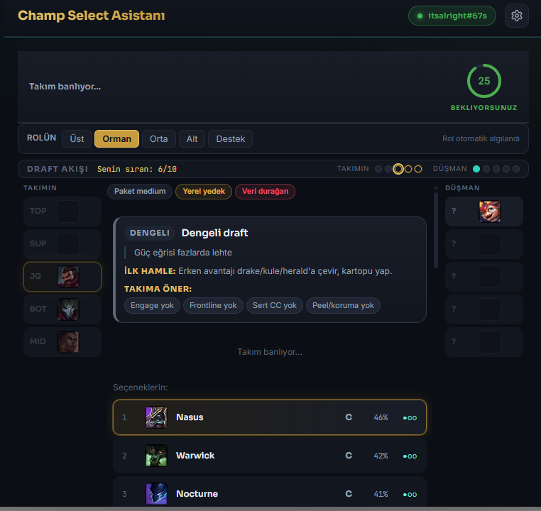
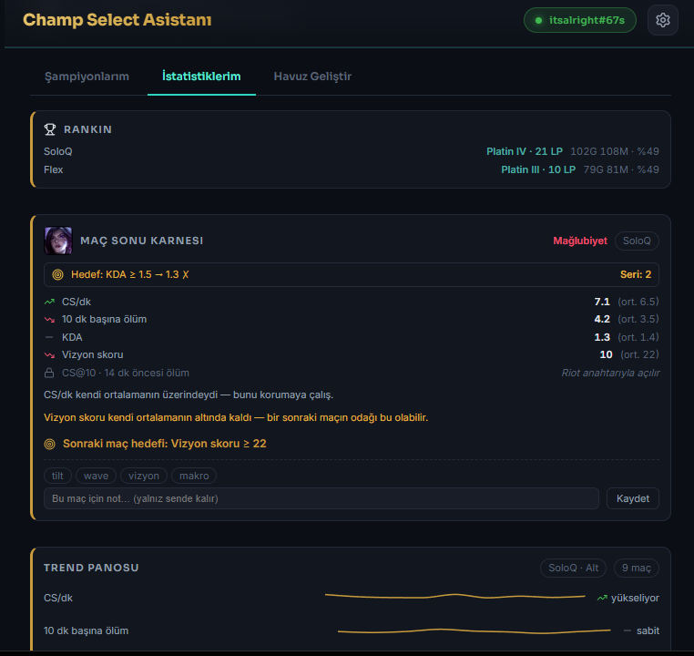
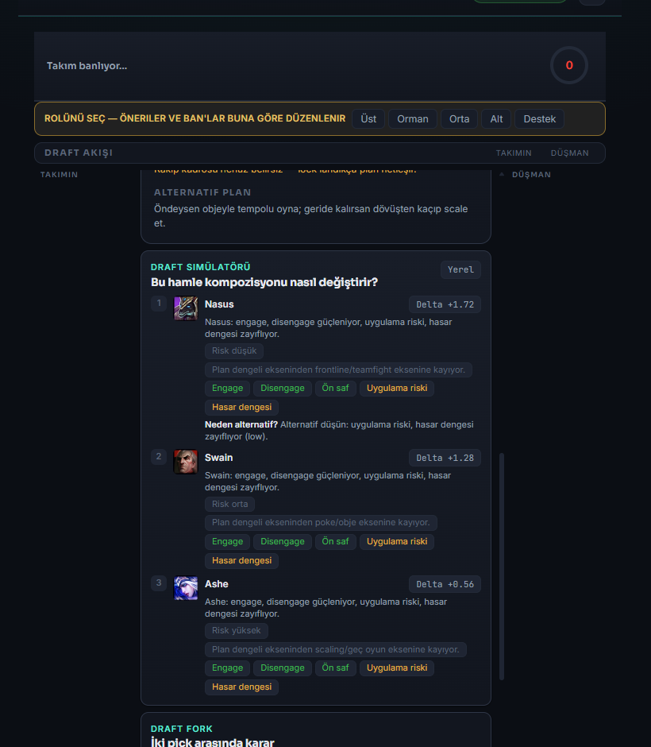

Your champion-select coach for League of Legends
A free Windows desktop app that reads your live champion select from the local League Client and shows the best picks with a one-line reason, plus ban suggestions and a build/rune summary — in the ~30 seconds you have.
Recommendation-only. It never auto-picks, auto-bans, or auto-locks. You always make your own choice.
Windows 10/11 · ~30 s install. The build is unsigned, so Windows SmartScreen may warn — choose "More info → Run anyway". All versions on the releases page.
How it works
From opening the app to making a faster, better-informed pick.
Launch the app
Open Champ Select Assistant next to League. It connects to your local League Client automatically — no login, no key.
Enter champion select
The app reads the live champ-select state (your role, your pool, lobby bans) directly from the client.
See recommendations
Top pick suggestions with a one-line reason, ban suggestions, and a build/rune summary for the current patch.
You decide
Pick and lock yourself. The app only suggests — it never acts in the game on your behalf.
Screenshots
A look at the champion-select recommendations and post-game coaching.



Features
Built to think like a coach, within Riot's rules.
Pick recommendations
Combines your own comfort (match history + champion mastery) with aggregated meta to rank the best picks for your role, each with a short reason.
Ban suggestions
Highest-threat logic for the ban phase, including champions your opponents are hovering (already visible in the client).
Builds & runes
Matchup-aware item and rune summaries for the current patch, sourced from public static data and aggregated stats.
Post-game report card
Every synced match is scored against your own role/queue baseline (CS/min, deaths, KDA, vision) with one thing to keep and one to fix.
Next-match focus goal
Each report leaves a single measurable goal and checks it next game, with a streak — turning an analyst into a coach.
Session coach
A warm-up checklist at the start, and a gentle "take a break" nudge after a losing streak. Suggestions only; nothing is forced.
How data works
Per-player data stays local; only aggregated meta is computed server-side.
On your machine: the app reads your recent matches, champion mastery, and live champ-select state from the local League Client and stores them only in a local database. Nothing is uploaded, sold, or shared. No accounts, no telemetry.
Aggregated meta (server-side): a scheduled job samples high-elo games to compute champion win/pick/ban rates, lane matchups, and common builds for the current patch. The Riot API key used for this is stored only on a server-side proxy and is never embedded in the distributed app. Static champion/item/rune data comes from Data Dragon / Community Dragon.
Respecting Riot's rules
- ✓ Recommendation-only — no auto pick, ban, or lock. The user makes every choice.
- ✓ No game memory reading or injection. In-game features use only Riot's public Live Client Data.
- ✓ No telemetry; no personal data sold or shared. Only aggregated statistics are stored server-side.
- ✓ The API key is never shipped in the client binary.